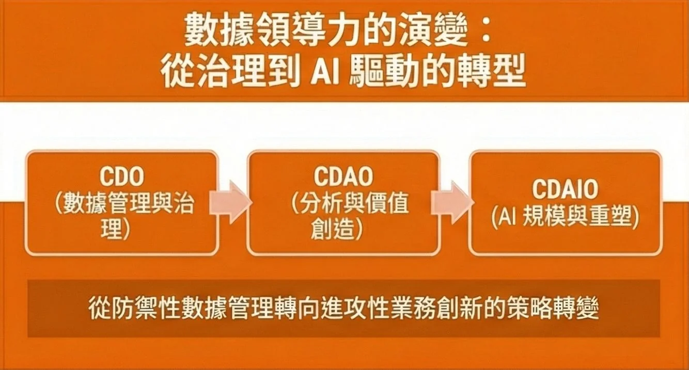
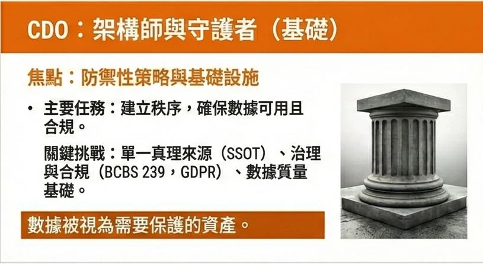
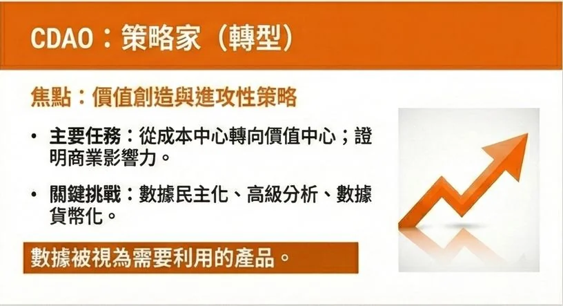
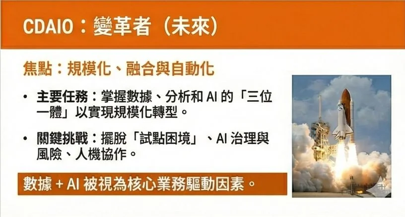

近期 HBR 發表了一篇文章《Why Your Company Needs a Chief Data, Analytics, and AI Officer》
探討了 CDAIO 這個頭銜。
這些年來，組織內關於資料主管 ( Data leader ) 這個角色 C-Suite 的頭銜不斷演進：從 CDO (Chief Data Officer)、CDAO (Chief Data and Analytics Officer)，演變至今日的 CDAIO (Chief Data, Analytics, and AI Officer)。
坦白說，客戶面對這樣的C-Suite頭銜議題時總是半信半疑。許多人一定在想，這該不會只是一種頭銜通膨（Title Inflation）？」但是，我也常會問客戶的問題是：「如果 AI 無法發揮價值，現在誰會被挑戰/問責？」
當我們與客戶討論這樣的議題時，最終都還是會回歸到很務實的核心議題：這個角色的責任到底是什麼？以我的觀察，這是金融業在數位浪潮下，這三個頭銜的演化代表了金融業看待資料的三種截然不同之戰略思維轉變。
以下簡單總結了三個時期各自最關注的核心任務、痛點以及三個關鍵議題：
1️⃣ CDO 時期：奠基與防守
🟥 主要痛點： 我們有海量數據，但沒人敢用，因為沒人知道哪個數字是對的。
🟪 核心任務： 建立「單一真理版本 (Single Source of Truth)」。
🟦 關鍵挑戰： 這是一個辛苦的基礎工程——確保資料品質、滿足監管合規 (Compliance)、打破部門穀倉 (Silos)。這時期的數據被視為一種「資產」，需要被嚴格保護與盤點。
2️⃣ CDAO 時期：從成本中心轉向價值中心
🟥主要痛點： 數據整理好了，但董事會開始問：「我們花了幾千萬建 Data Lake，買了Data Warehouse，ROI 在哪裡？」
🟪核心任務： 數據民主化與商業變現。
🟦關鍵挑戰： 不再只是「儲存資料」，而是「分析」。如何讓數據走出 IT 部門，賦能前線業務（Data Democratization），並透過進階分析（Advanced Analytics）主動出擊，從防守轉向進攻得分。
3️⃣ CDAIO 時期：AI 的規模化與融合
🟥主要痛點： 每個人都在談 GenAI，POC跟沙盒做了一堆，但真正能落地進入核心業務場景的有多少呢？
🟪核心任務： 駕馭「三位一體」的複雜性——Data 是燃料，Analytics 是引擎，AI 是領航。
🟦關鍵挑戰：AI 治理與風險、從實驗室走到營運各方面的鴻溝、「三位一體」下的組織架構與責任調整是否有對應的調整？
總結來說，如果今天董事會提問：『資料與 AI 到底替我們賺了多少錢、降了多少風險？』，在場的每個人是否有相同的答案呢？


